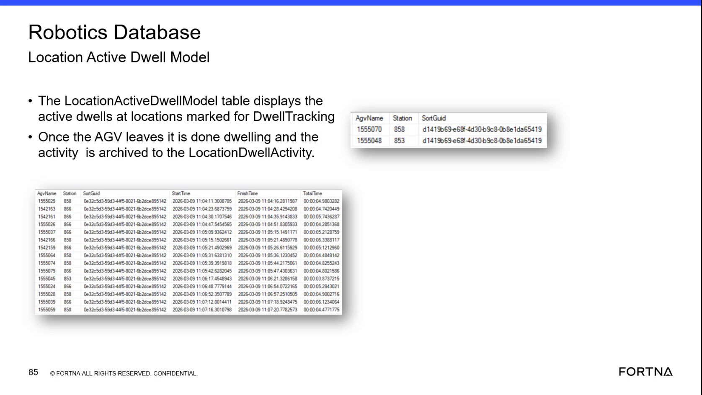

| Procedure ID | proc_diagnose_agv_location_dwell_in_the_robotics_database_v1 |
|---|---|
| Title | Diagnose AGV Location Dwell in the Robotics Database |
| Procedure Type | diagnostic |
| Primary Role | L2_support |
| Support Safe | Yes |
| Capability Tags | robot_dwell_or_shutdown_staging |
| Access Surface | wcs_sql |
| Audience Roles | L2_support, L3_support |
| Failure Pattern Tags | shutdown_or_dwell_abnormal |
| Validation Status | needs_sme_review |
| Merge Status | source_finalized |
Use read-only SSMS access to the WCS / Helix Robotics Database to inspect active and completed AGV dwell records. Identify the AGV, station, SortGuid, and elapsed-time evidence associated with a tracked location dwell.
Use this diagnostic when investigating AGV waiting, idle time, or possible bottlenecks at a tracked hospital, tipper, or other station. Inspect the WCS / Helix Robotics Database in SSMS to determine whether the dwell is currently active or has been archived.

Responsible role: L2_support
Instruction:
In the WCS / Helix DB (SSMS), select the Robotics Database and locate the LocationActiveDwellModel and LocationDwellActivity tables.
Expected result:
The Robotics Database is selected and the two named dwell tables are available for read-only inspection.
Stop or Escalate If:
Responsible role: L2_support
Instruction:
In the WCS / Helix DB (SSMS), inspect LocationActiveDwellModel for active rows at locations marked for DwellTracking. Review the AgvName, Station, and SortGuid fields.
Expected result:
An active dwell row, when present, identifies the AGV in AgvName, the tracked location in Station, and the associated sort in SortGuid.
Stop or Escalate If:
Responsible role: L2_support
Instruction:
In the WCS / Helix DB (SSMS), compare the LocationActiveDwellModel Station and AgvName values with the AGV's current location or reported station when that evidence is available through the live support investigation.
Expected result:
The active database row associates the AGV named in AgvName with the station named in Station for the current dwell.
Stop or Escalate If:
Responsible role: L2_support
Instruction:
In the WCS / Helix DB (SSMS), inspect LocationDwellActivity for the AGV and station of interest. Review AgvName, Station, SortGuid, Start Time, Finish Time, and Total Time.
Expected result:
A completed activity row contains the AGV, station, and sort identifiers together with Start Time, Finish Time, and Total Time. A displayed interval may appear in a format such as 00:00:04.9803282.
Stop or Escalate If:
Responsible role: L2_support
Instruction:
In the WCS / Helix DB (SSMS), use the LocationDwellActivity Station and Total Time values to record the observed dwell interval and determine whether the live record names a hospital, tipper, or another tracked location.
Expected result:
The recorded result identifies the station named in Station and the elapsed interval shown in Total Time, such as 00:00:04.9803282.
Stop or Escalate If: